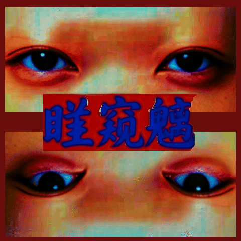
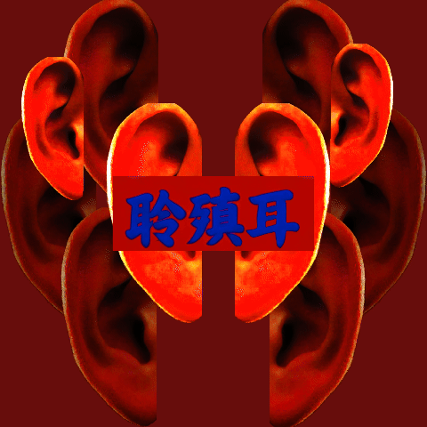
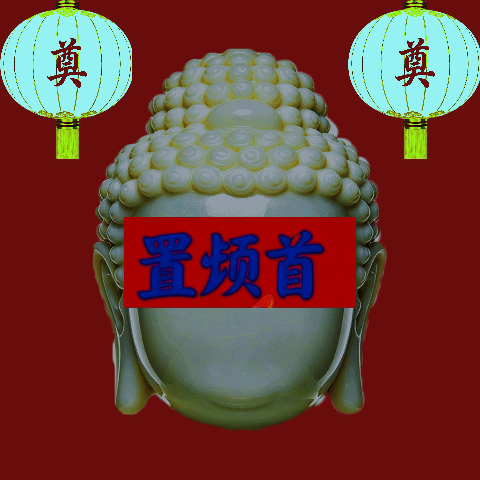

祀前一日，洒扫龛室，以新泉沃石，以艾烟熏之，至窅字微现湿光。禁屠宰、禁婚丧、禁妇人近龛。一日内不闻哭声、不闻犬吠、不闻金石相击。
祀日昧爽，祀官以皂缯蒙首，赤帛束腰，赤足入殿。先以炭笔于地画圆，围龛三匝，留一缺口，向巽方（东南）。画毕，以酒酹地三遍，每遍一诵：



祀官以铜匕剜其目，目须连筋带血，悬于石龛凹处。剜时不可碎，碎则不验。目悬三日，三日后自萎。萎时龛中微光一闪，若瞳开隙。血滴于龛，窅字渐深。是为“剜目启瞳”——窅以此目视其所当视。目在则约在，目腐则约不改。
祀官以利刃割其耳，耳须带软骨，不可撕裂。割后以铜钩悬于窅字左侧。耳中所凝血，三日方尽。尽时龛中微嗡，若膜鼓振动。是为“割耳开听”——窅以此耳听其所当听。耳在则听在，耳枯则听不绝。
祀官以锈刃斫其掌，断其五指，沥血于石龛之阴。每落一指，诵一咒。五指定后，以麻绳贯之，悬于窅字之侧。血未尽时，龛中微蠕，若枯指逐血而吮。
祀官以铜匕剖其胸，取心尚温，置于石龛正中。心须连大脉两根，断一则不验。置后以石压之，压至血尽。血尽时龛中微颤，若心跳一声。是为“剜心定约”——窅以此心搏其所当搏。心在则脉在，脉绝而窅亦不息。
祀官以锯断其颈，取颅完整，不可碎骨。断后以漆盘承之，置石龛最深处，面朝窅字。颅中脑髓七日方尽，尽时七窍各出微烟，聚于窅字凹处不散。是为“奉颅合窍”——窅以此颅纳其所当纳。颅在则窍在，窍在则窅有所归。
五物既陈，五窍已具。龛中幽光自敛，俄而复现——光色转青，凝而不散。窅字凹处如有物蠕，隐现轮廓，细不可辨。
是为“窅爷显”。非形、非影、非像、非声。视之则无，背之则在。祀者不言，言则风起；不视，视则烛灭。但觉龛中有物，窅然如初开之瞳、初搏之心。
显则约成，约成则岁熟。自今以往，五仪无辍，则窅常在。窅常在，则所求不祈而至，所祷不诵而应。